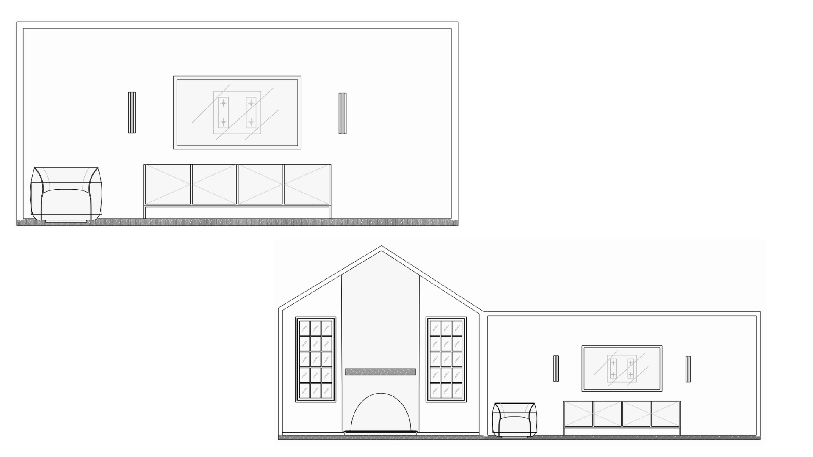
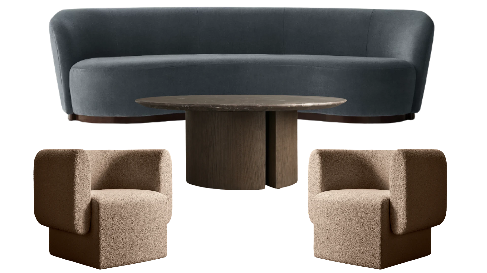
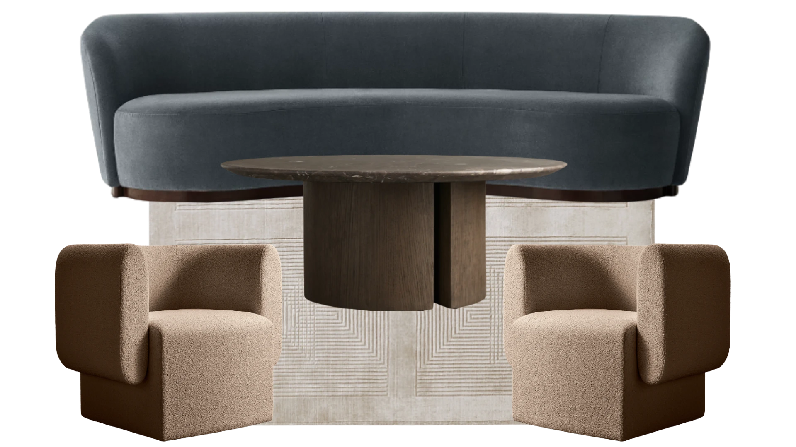
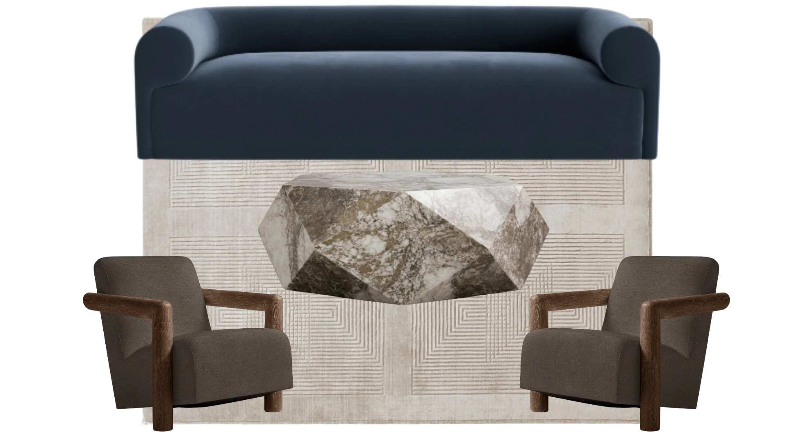
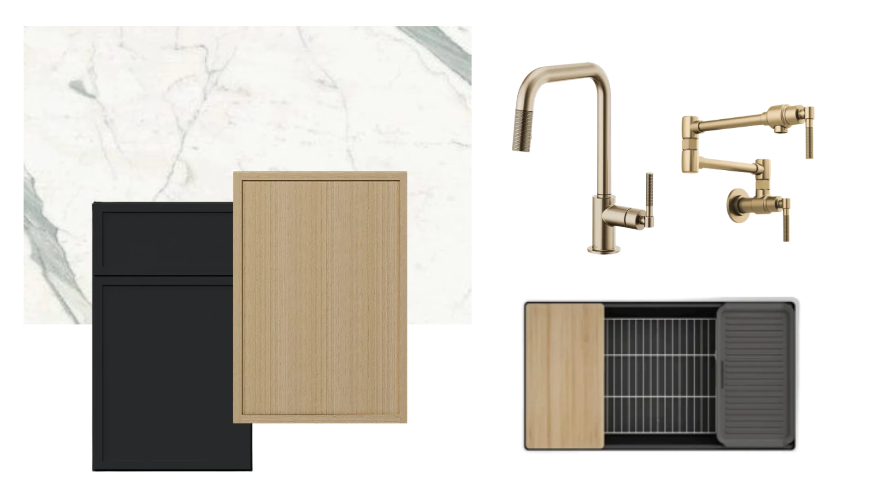
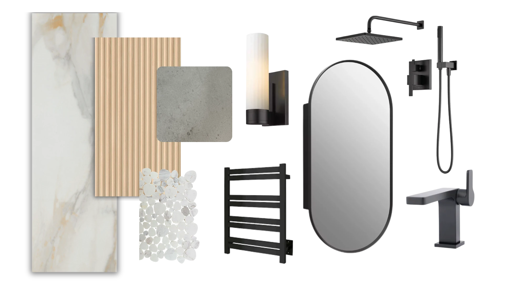
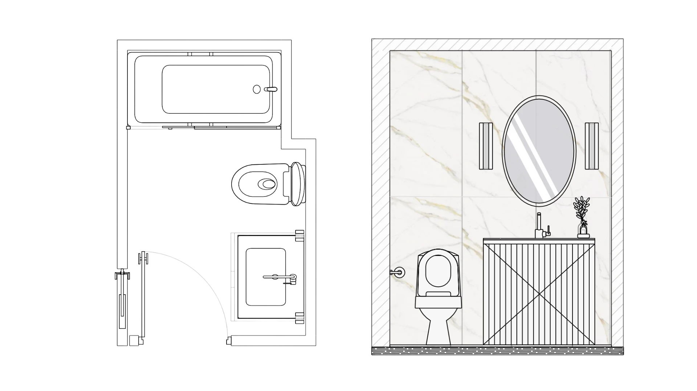

Case Study
Case Study
A complete interior concept for a multi-story New Jersey estate, blending transitional warmth with elevated material choices. The design balances dark, grounding tones — charcoal built-ins, blackened oak — against cream bouclé, travertine, and natural light, creating spaces that feel refined yet deeply livable.
Each room was approached as its own composition: the kitchen pairs matte black cabinetry with blonde oak and champagne bronze hardware; the living room centers on sculptural furniture and an arched fireplace; the dining room offers two distinct directions — a warm walnut tulip table or a monolithic travertine slab. The office draws from Benjamin Moore's Silhouette to create a moody, focused retreat.
Cream · Blackened Oak · Champagne Bronze · Greige · Espresso · Warm Taupe

A cream modular sectional anchors the space around a fluted dark-oak coffee table with marble top. A sculptural accent chair in shearling adds texture alongside a four-door media console. The fireplace wall features an arched opening — a quiet architectural anchor for the entire room.



Three seating concepts for the formal sitting room. Option A pairs a curved slate-blue sofa with bouclé lounge chairs and a travertine marble coffee table. Option B introduces a geometric rug to layer the grouping. Option C pivots to a deeper navy sofa with a faceted marble stone table and dark linen armchairs.


Two direction options for the formal dining room. Direction A centers a warm walnut table with a cast-brass tulip base beneath a linear crystal chandelier, paired with upholstered dining chairs. Direction B introduces a sculptural travertine slab dining table under a swag of opalescent globe pendants in antique brass — softer, more organic.



Matte black perimeter cabinetry pairs with blonde oak island panels and a Calacatta marble countertop throughout. Champagne bronze fixtures — a knurled pull-down faucet and articulating pot-filler — add warmth against the dark palette. Counter stool selections offer two directions: sculptural wood frames or refined blackened metal. The adjacent kitchen dining area features a round dark-marble pedestal table beneath a tiered dome pendant.

The home office is anchored by floor-to-ceiling built-in shelving painted in Benjamin Moore Silhouette AF-655 — a deep warm charcoal that recedes the walls and highlights curated objects. A blackened oak console desk pairs with a barrel-back upholstered chair beneath a sculptural plaster dome pendant in antique brass.


A material palette of Calacatta marble wall tile, fluted blonde oak vanity panels, and honed grey stone countertop grounds this space in elevated texture. Matte black hardware, an oval pill mirror, and heated towel bar complete the look. The floor plan and elevation detail the tub-to-shower configuration with a marble mosaic floor at the wet area.
"Every room should feel like it was built for the life that happens in it — not just the life you imagine."— Alexandra Hurwitz, Interiors x Alex